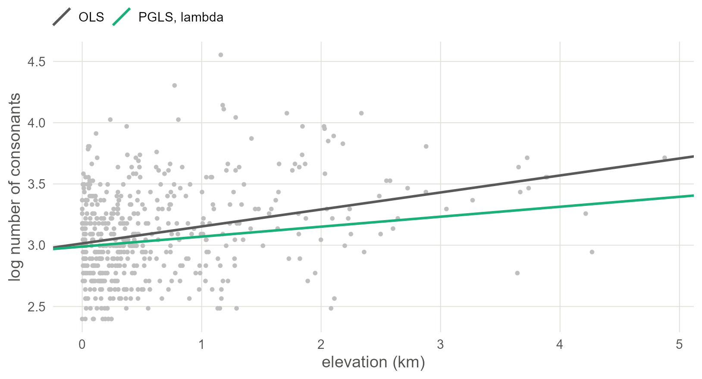
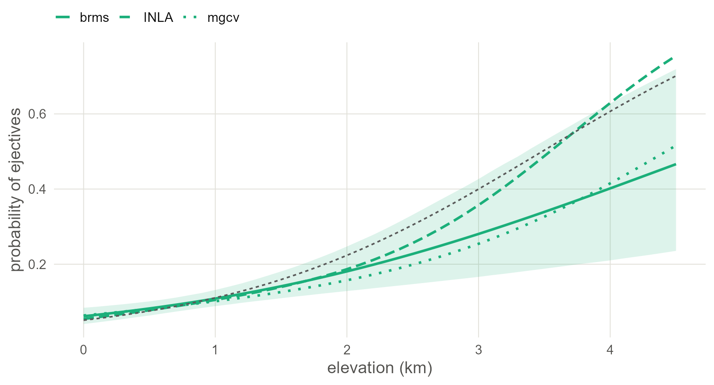

4 Phylogeny in INLA, mgcv and by maximum likelihood
Fit the phylogenetic model of the last chapter again with INLA and with mgcv in seconds, then meet the classical versions, PGLS and phylogenetic logistic regression, and see where the engines agree.
4.1 Set up
library(ape)
library(INLA)
library(mgcv)
library(phylolm)
library(ggplot2)
base <- "https://rehan-muh.github.io/tutorials/data/"
d <- read.csv(paste0(base, "languages.csv"))
tree <- read.tree(paste0(base, "glottolog_tree.nwk"))
d$elev_km <- d$elevation / 1000
m0 <- glm(ejectives ~ elev_km, family = binomial, data = d)All three engines start from the matrix of Chapter 3. Two of them want its inverse, the precision matrix, so build both once, in the order of the data.
4.2 INLA
brms draws samples from the posterior. INLA computes an approximation to it directly (Rue et al. 2009), using the fact that all the models in this book are regressions with Gaussian latent effects. For that class the approximation is usually accurate and takes seconds. The price is a formula interface with its own vocabulary:
- A latent effect is written
f(index, model = "..."), whereindexis a column of integers saying which effect each row uses. - INLA thinks in precisions, one over the variance.
- Priors are attached to each
f()throughhyper =.
d$fam_id <- as.integer(factor(d$family))
d$phy_id <- seq_len(nrow(d)) # row i of Q is language iTo compare with brms, use the same priors. There, every standard deviation had an exponential(1) prior, which puts 5% of its mass above 3. INLA’s penalised-complexity prior pc.prec (Simpson et al. 2017) is that same exponential distribution on the standard deviation, specified by exactly that statement: param = c(3, 0.05) reads “the probability that the standard deviation exceeds 3 is 0.05”. The normal(0, 1) prior on the slope goes in control.fixed.
pc_sd <- list(prec = list(prior = "pc.prec", param = c(3, 0.05)))
fixed <- list(mean = 0, prec = 1)
# INLA reports precisions; these helpers turn them into what brms reports
sd_of <- function(fit, name) {
m <- inla.tmarginal(function(p) 1 / sqrt(p), fit$marginals.hyperpar[[name]])
z <- inla.zmarginal(m, silent = TRUE)
round(c(mean = z$mean, lower = z$quant0.025, upper = z$quant0.975), 2)
}
slope_of <- function(fit) {
cols <- c("mean", "sd", "0.025quant", "0.975quant")
round(unlist(fit$summary.fixed["elev_km", cols]), 2)
}The family intercept is an iid effect. The phylogenetic effect is a generic0 effect, which takes the precision matrix as Cmatrix.
i_fam <- inla(ejectives ~ elev_km + f(fam_id, model = "iid", hyper = pc_sd),
family = "binomial", data = d, control.fixed = fixed)
i_phy <- inla(ejectives ~ elev_km +
f(phy_id, model = "generic0", Cmatrix = Q, hyper = pc_sd),
family = "binomial", data = d, control.fixed = fixed)
rbind(family = slope_of(i_fam), phylogeny = slope_of(i_phy))## mean sd 0.025quant 0.975quant
## family 1.36 0.31 0.79 2.00
## phylogeny 1.45 0.40 0.78 2.38
rbind(family = sd_of(i_fam, "Precision for fam_id"),
phylogeny = sd_of(i_phy, "Precision for phy_id"))## mean lower upper
## family 3.76 2.36 5.64
## phylogeny 3.00 1.75 4.58With your own data.
solve()on a dense matrix is fine up to a few thousand languages. Check the order: rowiofQmust be the language whosephy_idisi. IndexingAby the data’s language column, as above, guarantees it.
4.3 mgcv
A generalised additive model adds smooth terms to a regression (Wood 2017). Each smooth is a set of coefficients with a penalty, and the penalty decides what kind of dependence it describes. Penalise each coefficient’s distance from zero and you have a random intercept. Penalise the coefficients according to a tree and you have a phylogenetic effect. mgcv estimates the strength of each penalty by restricted maximum likelihood (Wood 2011). There are no priors and nothing to sample.
mgcv identifies groups by factor levels, and for the phylogenetic term the levels must match the row names of the penalty matrix.
d$family_f <- factor(d$family)
d$glottocode_f <- factor(d$glottocode, levels = rownames(Q))
g_fam <- gam(ejectives ~ elev_km + s(family_f, bs = "re"),
family = binomial, data = d, method = "REML")
g_phy <- gam(ejectives ~ elev_km +
s(glottocode_f, bs = "mrf", xt = list(penalty = Q)),
family = binomial, data = d, method = "REML")
rbind(family = summary(g_fam)$p.table["elev_km", 1:2],
phylogeny = summary(g_phy)$p.table["elev_km", 1:2])## Estimate Std. Error
## family 1.16 0.309
## phylogeny 0.97 0.358
gam.vcomp(g_phy)##
## Standard deviations and 0.95 confidence intervals:
##
## std.dev lower upper
## s(glottocode_f) 3.85 2.31 6.44
##
## Rank: 1/1
##
## All smooth components:
## [1] 3.85bs = "re" is the random-effect smooth and bs = "mrf" a smooth over the levels of a factor with a penalty matrix you supply. gam.vcomp() reports the penalty as a standard deviation, the counterpart of sd(Intercept) in brms.
Watch out. The
mrfsmooth takes an argumentkthat keeps only theksmoothest patterns on the tree. It is tempting for speed, and for a phylogeny it is risky: the patterns it drops first are the ones that separate small families and close sisters, which is most of what a language tree contains. Leavekout, as above, to keep the full matrix.
4.4 Maximum likelihood: PGLS
The oldest phylogenetic regressions are fitted by maximum likelihood and are built for a continuous outcome. So this section adds a second question to the running example: do languages at altitude have larger consonant inventories? Ejectives are extra consonants, so if Everett’s effect is real it should leave a trace here too.
Phylogenetic generalised least squares (PGLS) (Grafen 1989; Freckleton et al. 2002) is ordinary regression with residuals that are correlated according to the tree. phylolm() (Ho and Ané 2014) fits it, matching rows to tips by row name.
d$log_cons <- log(d$n_consonants)
rownames(d) <- d$glottocode
ols <- lm(log_cons ~ elev_km, data = d)
pgls_bm <- phylolm(log_cons ~ elev_km, data = d, phy = tree, model = "BM")
pgls_l <- phylolm(log_cons ~ elev_km, data = d, phy = tree, model = "lambda")
rbind("OLS" = summary(ols)$coefficients["elev_km", 1:3],
"PGLS, BM" = summary(pgls_bm)$coefficients["elev_km", 1:3],
"PGLS, lambda" = summary(pgls_l)$coefficients["elev_km", 1:3]) |> round(3)## Estimate Std. Error t value
## OLS 0.139 0.02 6.95
## PGLS, BM 0.081 0.02 4.08
## PGLS, lambda 0.081 0.02 4.08
pgls_l$optpar## [1] 1model = "BM" takes the tree’s correlations as they stand. model = "lambda" estimates Pagel’s λ, which shrinks every off-diagonal correlation by the same factor: at 0 the model is ordinary least squares, at 1 it is Brownian motion. optpar is the estimate. Here it lands on its upper limit of 1, so the two fits coincide: consonant inventories are at least as tree-like as the matrix assumes. That will not always happen, and the model with λ is the one to report by default, because it lets the data say how much the tree matters. Either way the slope is about 40% smaller than the ordinary one and its t-value falls from 7 to 4.
lines <- data.frame(model = c("OLS", "PGLS, lambda"),
intercept = c(coef(ols)[1], coef(pgls_l)[1]),
slope = c(coef(ols)[2], coef(pgls_l)[2]))
ggplot(d, aes(elev_km, log_cons)) +
geom_point(colour = "grey75", size = 0.9) +
geom_abline(data = lines, linewidth = 0.9,
aes(intercept = intercept, slope = slope, colour = model)) +
scale_colour_manual(values = c("grey35", "#1BAF7A"), name = NULL) +
labs(x = "elevation (km)", y = "log number of consonants")
Figure 4.1: Consonant inventory size against elevation, one point per language, with the ordinary regression line (grey) and the phylogenetic one (green). Knowing that the points come in related clusters makes the line shallower.
With your own data.
nlme::gls()fits the same models withcorrelation = corBrownian(1, tree, form = ~glottocode)orcorPagel().phylolm()is faster and matches rows to tips for you.
4.5 Maximum likelihood: phylogenetic logistic regression
For a binary outcome the same package has phyloglm(). Back to ejectives:
plog <- phyloglm(ejectives ~ elev_km, data = d, phy = tree,
method = "logistic_MPLE", btol = 30)
round(summary(plog)$coefficients, 3)## Estimate StdErr z.value p.value
## (Intercept) -1.293 1.322 -0.978 0.328
## elev_km 0.263 0.174 1.512 0.131
unname(plog$alpha)## [1] 0.406What this assumes. This is a different model from the one brms fitted. It is the model of Ives and Garland (2010), in which the binary feature itself switches on and off along the branches.
alphais the rate at which lineages forget their ancestral state: a smallalphameans strong phylogenetic signal. Its slope is not conditional on a lineage effect, so compare it with the naive slope and with the averaged slope of Chapter 3, not with the brms slope as printed.
It is the most sceptical estimate in this book: smaller than the naive slope, with an interval that includes zero. The latent-effect models let each lineage have its own baseline and find an effect of elevation around it. This one asks whether elevation predicts the feature once the feature’s own inheritance is modelled, and finds the evidence thinner. Both are defensible readings of “controlling for phylogeny”, so say in your paper which one you mean.
4.6 Every engine, one figure
Bring back the brms fit of Chapter 3 and put the latent-effect models side by side. If you ran that chapter, the brms call loads its saved fit; if not, it fits now.
library(brms)
options(mc.cores = 4, brms.backend = "cmdstanr")
dir.create("fits", showWarnings = FALSE)
b_phy <- brm(ejectives ~ elev_km + (1 | gr(glottocode, cov = A)),
data = d, data2 = list(A = A), family = bernoulli(),
prior = prior(normal(0, 1), class = b) +
prior(exponential(1), class = sd),
seed = 1, file = "fits/m_phy")
rbind("brms" = fixef(b_phy)["elev_km", 1:2],
"INLA" = slope_of(i_phy)[1:2],
"mgcv" = summary(g_phy)$p.table["elev_km", 1:2]) |> round(2)## Estimate Est.Error
## brms 1.49 0.42
## INLA 1.45 0.40
## mgcv 0.97 0.36The regression lines are averaged over the sample as in Chapter 3: every language keeps its own lineage effect and all are moved to the same elevation.
x <- seq(0, 4.5, by = 0.1)
averaged <- function(eta, b) {
at_sea <- eta - b * d$elev_km # every language moved to 0 km
sapply(x, function(xi) mean(plogis(at_sea + b * xi)))
}
draws <- as_draws_df(b_phy)
eta <- posterior_linpred(b_phy)
p <- sapply(x, function(xi) {
b <- draws$b_elev_km
rowMeans(plogis(eta - outer(b, d$elev_km) + b * xi))
})
band <- data.frame(elev_km = x, lo = apply(p, 2, quantile, 0.025),
hi = apply(p, 2, quantile, 0.975))
lines <- rbind(
data.frame(elev_km = x, engine = "brms", p = colMeans(p)),
data.frame(elev_km = x, engine = "INLA",
p = averaged(i_phy$summary.linear.predictor$mean,
i_phy$summary.fixed["elev_km", "mean"])),
data.frame(elev_km = x, engine = "mgcv",
p = averaged(predict(g_phy), coef(g_phy)[["elev_km"]])))
naive <- data.frame(elev_km = x)
naive$p <- predict(m0, newdata = naive, type = "response")
ggplot(lines, aes(elev_km, p)) +
geom_ribbon(data = band, aes(ymin = lo, ymax = hi, y = NULL),
fill = "#1BAF7A", alpha = 0.15) +
geom_line(aes(linetype = engine), colour = "#1BAF7A", linewidth = 0.9) +
geom_line(data = naive, linetype = "22", colour = "grey35") +
scale_linetype_manual(values = c("solid", "42", "13"), name = NULL) +
labs(x = "elevation (km)", y = "probability of ejectives")
Figure 4.2: The phylogenetic regression line from three engines, averaged over the sample: brms with its 95% band, INLA and mgcv as lines. The dashed line is the naive regression. Three different computations of one model give nearly one line; mgcv, which has no prior on the lineage variance, sits slightly apart.
4.7 What to carry forward
- The phylogenetic random effect is
(1 | gr(glottocode, cov = A))in brms,f(id, model = "generic0", Cmatrix = solve(A))in INLA ands(glottocode, bs = "mrf", xt = list(penalty = solve(A)))in mgcv. - INLA and mgcv return in seconds what Stan returns in minutes. Use them to explore, and keep a brms fit of the model you report as a reference.
- For a continuous outcome,
phylolm(..., model = "lambda")is the quick classical answer. -
phyloglm()answers a differently posed question and here gives a weaker result. Report which notion of control you used.
The tree is now in the model. The next three chapters do the same for the map.
4.8 Further reading
How earlier studies implemented genealogical control. There have been three generations. The first used the family or genus as a grouping factor: Jaeger et al. (2011) argue for random intercepts by family, and that became the default in quantitative typology. The second used trees of single families with models of feature change along the branches, as in Dunn et al. (2011), following Pagel (1994). The third puts a tree-derived covariance matrix into a regression over many families at once: Guzmán Naranjo and Becker (2022) do it in brms with Glottolog trees, essentially the model of Chapter 3, and Skirgård et al. (2023) do it in INLA with a global tree, essentially the generic0 model of this chapter, for every feature in Grambank.
- Villemereuil and Nakagawa (2014) is the clearest worked introduction to the phylogenetic mixed model, including non-Gaussian outcomes; Hadfield and Nakagawa (2010) give the theory.
-
Symonds and Blomberg (2014) is a practical primer on PGLS, and Revell (2010) shows why λ should be estimated together with the regression, as
phylolm()does. - Ives and Garland (2010) derive the phylogenetic logistic regression. For the reasons a significant result from any such test still needs care, see Maddison and FitzJohn (2015) and Uyeda et al. (2018).
- For models with a pull towards an optimum in place of free drift, see Hansen (1997);
phylolm()fits them withmodel = "OUfixedRoot". - Gómez-Rubio (2020) introduces INLA in general, and Ives (2019) defines R-squared measures for all of these models.